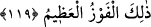
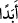

119. Allah buyurdu ki: Bu, doğrulara doğruluklarının fayda vereceği gündür.
Onlara içinde ebedî kalacakları, zemininden ırmaklar akan cennetler vardır. Allah
onlardan râzı olmuştur, onlar da O’ndan râzı olmuşlardır. İşte bu en büyük
başarıdır.
“Allah buyurdu ki:” Yani, Allah Teâlâ kıyâmet gününde Hz. Îsâ’nın cevabının
ardından hem onu tasdik etmek, hem de onun da içinde bulunduğu doğruların
durumlarını belirtmek üzere şöyle buyurur: “ Bu,” yani kıyâmet günü “doğrulara
doğruluklarının fayda vereceği gündür.” Buradaki doğruluktan (sıdk) maksat,
dünyadaki doğruluktur. Çünkü insana fayda verecek olan, mükellef olduğu zamanda,
yani dünyada yaptığı ameller ve sahip olduğu hasletlerdir. Nitekim dünyada cinayet
işlemiş bir kişinin âhirette bunu îtiraf etmesi ve dürüst davranması ona hiç bir fayda
sağlamaz. Yine bu caninin, cinayetini dünyada iken îtiraf etmesi de ona bir fayda
sağlamaz. Çünkü burada kastedilen, hangi hususta olursa olsun doğru davranan herkes
değildir. Burada asıl maksat dînî hususlarda doğru olandır. Dîni hususların başında ise
şimdi üzerinde durduğumuz tevhid ile onunla ilgili olan şerîat ve hükümleri gelir.
“Sâdıklar” dan maksat, doğru söyleyip doğruya davet eden peygamberler ve onlara
hem inanç hem de amel açısından inanıp tasdik eden ümmetleridir.
“Onlara içinde ebedî kalacakları, zemîninden ırmaklar akan, cennetler vardır.”
Onlar için sürekli nimetler ve sonsuz ecir vardır. İşte bu, en büyük kurtuluştur.
Âyetteki “__WORD__” lafzı, ile’l-ebed, sonsuza kadar anlamında olup cennetteki sürekliliği
(hulûd) pekiştirmek için kullanılmıştır.
“Allah” itâatlerinden dolayı “onlardan râzı olmuştur, onlar da” Cennetlere ilave
olarak artık kendisinden başka bir gaye olmayan Allah’ın lütuf ve rızasına nail oldukları
için “O’ndan râzı olmuşlardır.” Bu sebeple Allah Teâlâ buyurmuştur ki: “İşte bu”
Allah’ın hoşnutluğuna ulaşmak “en büyük başarıdır.” Yani en büyük nâiliyettir. Âyette
geçen “fevz”in asıl manası murada ermektir. Burada başarının büyük olduğunun
belirtilmesi, başarının ilgili olduğu gayenin büyük oluşundan kaynaklanmaktadır. Gaye
ise Allah’ın rızasıdır ki onun ötesinde hiçbir gaye yoktur.
et-Te’vîlâtün-Necmiyye’de şöyle denilmektedir:
“Allah buyurdu ki: Bu, doğrulara doğruluklarının fayda vereceği gündür,” Allah,
doğrulara doğruluklarının fayda vereceği gün olarak sadece kıyamet gününü tahsis
etmiştir. Çünkü doğrulara doğrulukları dünyada fayda da verebilir, zarar da. Mesela bir
kimse doğruluğunun (sıdk) gereği olarak iyiliği emredip kötülüğü yasaklar. Fakat bu